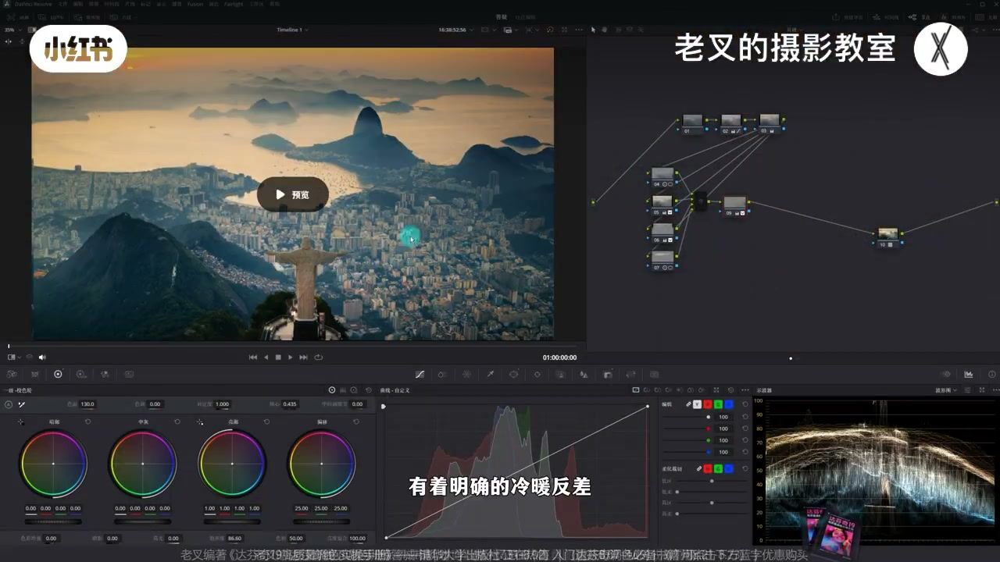
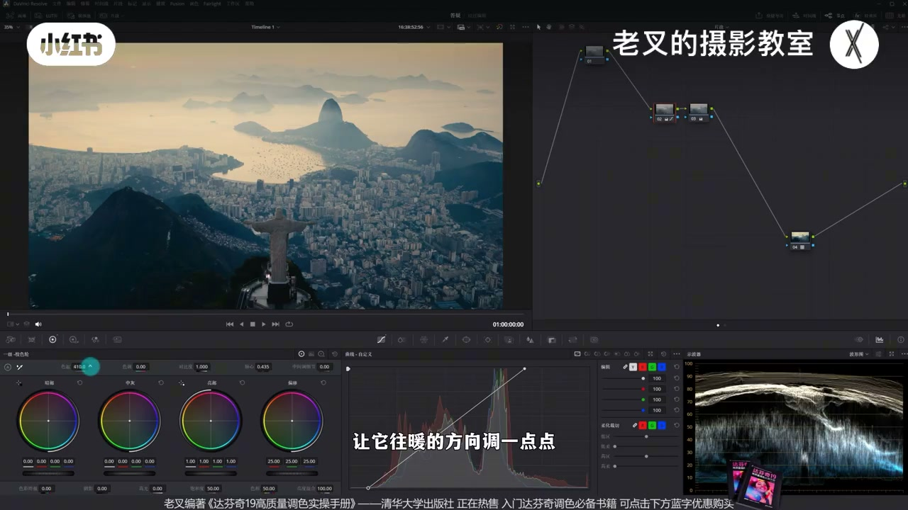
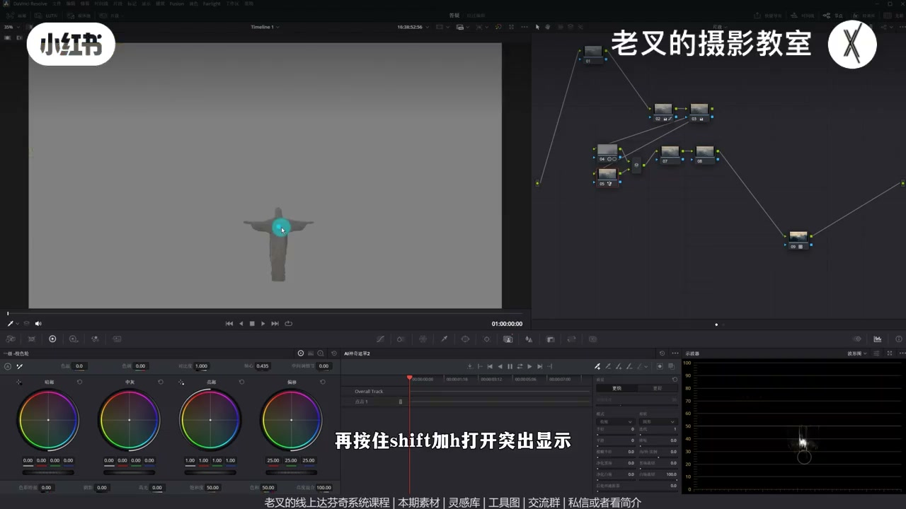
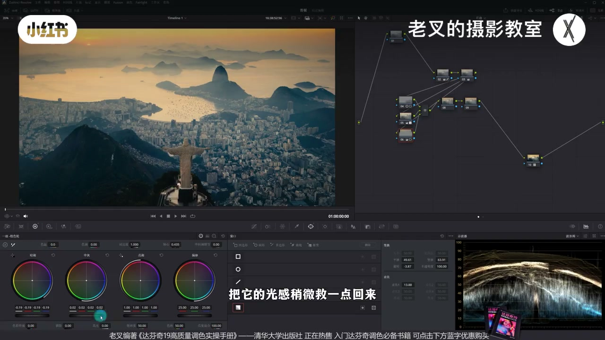
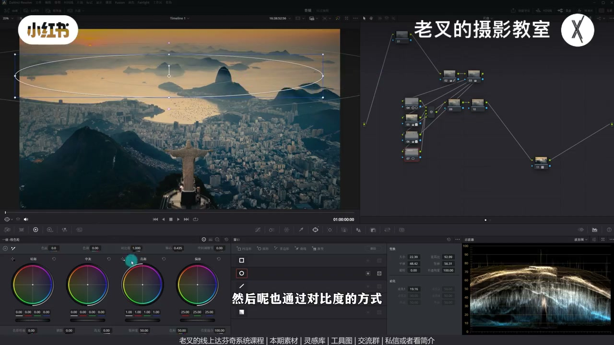
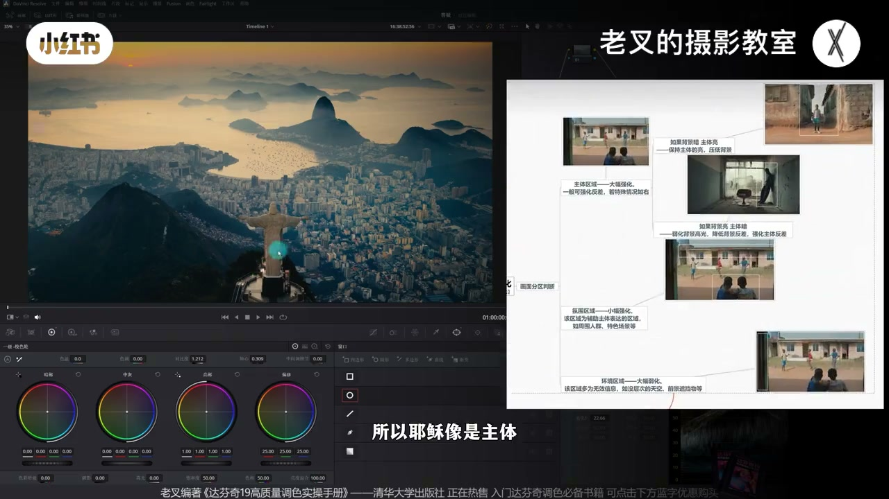

内容要点
老叉用影视飓风耶稣像外景演示快速仿色：冷暖反差强且跟明暗挂钩时，可先套 FilmLooks 2383 再还原；灰片先找白点/黑点，另节点加饱和再微调白平衡。重点是分区——中间加对比去雾、神奇遮罩把耶稣像反直觉地做暖做亮、天空渐变压暗并用 HDR 控局部；互补色用降色温一举两得。仿色训练重在过度解读主次与冷暖。
知识结构
冷暖强反差→多半 2383；LUT 库 FilmLooks 拖末节点，不转 Cineon 也能调。
找白点压暗部；另节点加饱和再回色温；灰片难先判白平衡。
中间遮罩加对比去雾；神奇遮罩提亮加暖耶稣像与平台（反直觉）。
渐变压暗：大幅降暗部、略抬中灰保光感；HDR Shadow/高光精控。
降色温同时加冷减暖；水面/建筑再加对比与饱和明确冷暖。
全局加对比会爆天压死暗部；主体/氛围/环境分工，暖强化冷弱化。
仿色不是像素对齐，而是猜出「后期一定做了什么」。强冷暖可先 2383；曝光对齐后必须区域性调——主体反直觉强化、天空分区压暗、互补色用色温整体搬迁。过度解读主次与冷暖，思路才自洽。
00:00-00:52立题：强冷暖仿色，先猜 2383
朋友圈出中间区域为何清晰、颜色如何仿到参考。老叉用约九个节点做出接近结果。看到明确冷暖反差且与明暗强相关时，大概率是 2383 铺底。
重置后先建节点：调色面板左上角 LUT 库 → FilmLooks → 2383 拖到末节点。可先再均转成 Cineon，但往期结论是不转也能调出来；灰片套上后曝光颜色仍不对，需要还原。

00:52-02:00还原：白点暗部到位，饱和后再判白平衡
撇开 4 号与降噪 1 号：2 号找高光白点、压暗部；3 号加一点饱和。发现偏冷再回 2 号略加色温。
单独开饱和节点是因为灰片做好黑白点仍难精准判白平衡，需先加饱和再调；也可能改该节点色彩空间到 HSV 做减法饱和（本期不展开）。此时冷暖开始有，但与参考曝光分区差很大——进入本期重点：分区调整。

02:00-03:43中间去雾 + 神奇遮罩暖亮耶稣像
中间缺光感因雾气导致反差不够、偏灰。直觉加对比度：给中间（可带一点雕像）画遮罩，加对比并移轴心略提亮——灰感下去。
参考里耶稣像异常暖且亮：光线从前往后照，面向镜头理应暗冷，属反直觉强化。Alt/Option+P 并行，用 AI 神奇遮罩点选雕像与平台，Shift+H 看选区并跟踪；加色温、对比度，轴心左移提亮，感觉开始接近。

03:43-05:09天空渐变：压暗保光感，HDR 精控
再 Alt/Option+P 建并行，自上而下渐变遮罩。参考天空明显压暗去雾、背光面更暗：大幅降暗部色轮曝光；中灰光感丢失则略抬中灰。局部再暗可用 HDR Shadow，比只拧一级暗部更准。
太阳附近高光仍亮：再降 HDR 高光曝光。曝光整体接近参考后，可做「猜成熟画面哪些行为一定是后期做的」——成本极低的自学；招生信息略。

05:09-07:17互补色降色温；水面建筑再分区
颜色差：己方过暖、冷不够——互补。不分开加蓝饱和/降暖饱和，而在天空节点略降色温：冷变冷、暖变淡，一举两得。
水面可再并行遮罩（可带远山），柔化开大，对比+轴心出光感。天空略暗则抬回一点 Highlight；中间建筑回 4 号轴心微调。建筑区再遮罩加饱和并略加色温暖一点，冷暖关系更明确。

07:17-09:20复盘：为何必须分区，如何过度解读
仿色目的不是单纯一致，而要明确为何这样做。全局加对比：雾天气该加，但最亮天空更亮、背光与雕像更死——不舒服，必须区域性调。
按调色思路图：主体耶稣像大幅强化；建筑与天空是氛围区；山体可适当压暗。强化不只靠明暗，也靠颜色——重要区域偏暖，不重要山体偏冷。过度解读越多，调色越自洽。素材可寻影视飓风官网。

完整转录（437段）
以下文本由 Whisper medium 模型自动转录，可能存在少量识别误差，已尽可能修正。
前几天一位朋友问我这个素材该怎么调
这是影视剧风的素材
他说圈出来的区域是怎么做的这么清晰
还有他这个颜色怎么调的
这是他调的结果
这是他想要的结果
他调的其实已经不错了
但是和想要的还是有一点点区别的
这是我用9个节点去调的
还是比较接近的对吧
我们这一期就来分析一下这该怎么调
首先我们看到参考图
大家在看到一个画面有着明确的冷暖反差
并且冷暖反差和明暗关系有着强联系的前提下
其实能够很快速的就知道
它大概率是2383铺底来做的
我们把节点给它重置了
对于一个灰片来讲
其实我们可以先建立几个节点
然后再达分析调色面板
左上角这里有个蜡的库
在蜡的库中找到FilmLooks
然后再找到2383
直接把它拖到最后一个节点上
你当然可以先用再均转换
把素材转换成CineLog
但是我们之前出过一期视频
你不转其实问题也不大
你是能调出来的
套上去之后因为它还是灰片
所以我们还是需要还原对吧
这个目前曝光和颜色都不对
我们把4号节点给它撇开
1号节点留作降噪也给它撇开
然后在2号节点中
我们把它的曝光
给它做一点调整
首先把白点
就是把它高光给它找到位
然后把暗部给它往下降
好 这样一做
我们的曝光差不多了
然后我们再在3号节点
后面一个节点中
把它增加一点饱和度
加完了之后
我们发现有点冷对不对
我们再回到2号节点
给它加一点色温
让它往暖的方向调一点点
大概到这个程度
这个流程其实之前
有不少朋友问过
为啥我用饱和度
单独另一个节点
很多时候我们在灰偏状态下
就算你做好了白点和黑点
你也有可能是无法精准判断
它白平衡是否有问题的
所以我们需要先加饱和度
再去调白平衡
而我单独另一个节点
是因为我有可能会改变
饱和度节点的色彩空间
我们可能会把它
在这里面改成HSV
因为我要做减发饱和度
这个我们这一期不展开讲
之前其实有讲过的
此时我们看到画面是不是
那种冷暖反差开始有了 对吧
我们这时候
可以跟参考图再做一下对比
还是有非常大的区别
区别在哪呢
区别在于曝光情况
我们是非常一致
那这时候就需要用到
我们这一期的重点思路
分区调整
首先我们要先解决
那位朋友的问题
他觉得中间这个区域
得做出光感
那这个地方
为啥没有那么强的光感呢
是因为这个天气太有误 对吧
那有误就代表着
反差不够太灰了
增加反差
我们第一个反应是什么
是不是增加对比度
那我们可以建立几个节点
给它拉到第二排
我们开始调整曝光
我们可以先给中间这个区域
画一个遮罩
稍微带一下中间这个耶稣像
问题不大
画出来了之后
给它增加一点对比度
然后配合轴心
让它稍微亮一点
好 大概这个结果
我们放大看
是不是加了对比度之后
它就不灰了
这个思路其实非常直观
我们就是要通过这个方式
给它去掉一部分的误集
然后我们再看参考图
其实参考图
有个很奇怪的地方
它的耶稣像是不正常的暖
也不正常的亮
它是比较反直觉的
因为曝光
我们看到这个暖光
它是从前方往后照的
而面向我们的耶稣像
是没有被光照到
所以它理应是暗的是冷的
那想要单独调整它
这种不规则的物体
我们最好的方式
其实可以用神奇遮罩
我们可以按住Alt加P
或者是Alt加P
建立一个并行节点
在新进的这个节点中
我们选择这个工具
AI神奇遮罩
选择它了之后
我们许多点击一下
这个耶稣像
再按住Shift加H
打开突出显示
此时你看它就选出来了
对吧
我们也可以把这个地上的平台
也给它选中
因为参考图也有选中这个平台
选完了之后
我们别忘了点击跟踪
这个地方有个向前向后跟踪
给它大致跑一下
好
那选好了之后
我们可以给它加点色温
让它稍微暖一点
同时我们也可以配合
对比度和轴心
来给它稍微调整一下
它的反射和它的曝光
增加点对比度
然后向左移动轴心
让它能够亮一点
好
大概到这个情况
我们看到
是不是跟它感觉开始接近了
对吧
它也是暖的
它也是亮的
当然这个力度
你们自己在调的时候
也可以做一定的调整
最后就是天空
一般来讲
我们调天空
希望它能够有个渐变的效果
这是符合真实情况的一个调整
那我们也可以再按住AID加P
进入一个变形节点
从上往下
给它拉一个渐变遮罩
那该怎么调
我们依旧要打开参考图
我们其实能看到
对于天空
它是有明显压暗的
那当然它也是为了去误器
所以它的暗部压得会更多
你看这边这一部分的背光面
但是非常暗的
那可以映射到我们的操作
我们可以大幅的降低暗部色轮
曝光
让它往暗了去走
可是这样调完了之后
你会发现这些中灰区域
它的光感也失去了不少
对不对
所以我们可以稍微再提高点
中灰色轮的曝光
把它的光感稍微就一点回来
但是如果你觉得暗部
还是不够的话
其实我们完全可以用
HDR色轮中的Shadow色轮
给它再往下降
当然你降暗部色轮也是可以的
但如果你想要精准调整
这局部的曝光的话
用HDR色轮会效率更高
那此时我们再看参考图
参考图它的天空
还能再暗一些
特别是这个高光位置
对吧
高光位置
那我们再降低点
HDR色轮的曝光
把它的最亮的高光再往下降
好
大概到这个程度
我们看到这个太阳
其实差不多了对不对
那此时我们其实整体的曝光来讲
跟参考图就比较接近了
这样的思考其实很有趣
我们的线下课有一个板块
就是去猜
猜一个成熟画面
它有哪些行为
一定是后期做的
但如果你猜出来了
那我们的调色思路就完善了
这是一个成本极低的
自我学习的方式
那目前杭州班
重庆班跟广州班都在招生
如果你想了解
也可以私信
或是看我姐姐来找我
那目前我们虽然把天空的曝光
做得大差不差
但是颜色还不是很对
导致我们观感上来讲
不是特别的舒服
那差在哪儿呢
第一个就是
我们的暖比它暖多了
而我们的冷又不够它的冷
那这两个颜色
其实是有一点互补色的
对不对
对于互补色要调整
我们之前有说过
我们可以直接往目标方向去改变
什么意思
我们不去增加蓝色饱和度
也不去降低暖色的饱和度
而是通过降低色温的方式
往蓝的方向整体去做
我还是用的
刚刚这个天空这个界面
这个节点给它降一点点色温
我放大看吧
你看啊
当我们不做改变的时候
整体是非常暖的
那我们给它降一点色温了之后
你会发现冷的开始变冷了
暖的也开始变淡了
哎
这不就是一举两得的一个效果吗
既能够给这些冷的加冷
又能够降低暖的饱和度
那效果还不错对不对
那此时如果你觉得
你想让这个水面再亮一点
我们也可以再来个节点
按主要的加P或者是Option加P
给中间这个水面
可以带上一点点远处的山体
给它画一个遮罩
柔化剂的开大
然后也通过对比度的方式
让它稍微增加一点点反差
配合轴心去微调一下它的曝光
好
你看
那这样的这个水面
它的光感是不是就出来了
那我们曝光条这就差不多了
我们再用参考图去做对比
那此时是不是大体都非常接近了
我们觉得我们的天空
是不是比它稍微暗了一些
那我们把天空给它曝光
再拉回来一点
把哈莱的色轮
给它稍微提高一点
好
大概是这样
那具体的参数
你们在练习的时候
可以再微调
那这一部分的建筑
好像我们也稍微暗了一点
对吧
那我们也可以回到4号节点
把它的曝光通过轴心的调整
让它稍微亮一点
好
那除了曝光以外
这一部分
还有一个很大的区别
就是它的冷暖关系
比我们是要明确的
而我们可能颜色比较单一
那其实说到底
就是因为我们的饱和度
在这个区域还是不够
所以我们可以在后面
跟一个节点
我们开始要调颜色了
对不对
给这边的建筑
给它画一个遮罩
我大致一画
我们不浪费时间
然后给它增加一点饱和度
加了饱和度之后
它有点偏冷
对不对
我们可以通过色温的调整
让它往暖的方向走一点
此时你看
是不是我们冷暖的关系
也变得更加明确了
跟参考图更加接近了
对吧
那这个10号节点用不着
我们就可以拔山了
当然
如果你想把左边这个建筑
也给它提亮的话
你可以在4号节点画支灶的时候
把左边也带上
这个随便你问题不大
我们这个演示的视频
就不做特别细了
那此时我们通过滑翔的方式
其实大体是比较接近的
对吧
你可能说这个水面
它比我们还要亮一些
那我们可以再提高一点
它的曝光
这都是没问题的
也可以稍微给它加点Light色轮
那这种细微的调整
包括你每个区域的力度
你可以自己去把控
我个人觉得目前这样
稍微好看一些
素材大家可以去
影视飓风的官网去找
我就不给大家分享了
要知道的一个点就是
仿色它不是为了
单纯的调出一致
而是要明确调色目的
我们大致做出来之后
就要分析
为啥要这样做
首先我们一定要明确的是
我们要局部调整
如果你是全篇加对比度的话
它会怎么样
因为你有误器嘛对吧
加对比度是应该的
那我们加了对比度之后
会出现一个
本来就是最亮的天空
它会变得更亮
那这些背光面它太暗了
包括这个耶稣像也太暗了
这就不舒服
所以我们一定要区域性的调整
那这个局部调整的思路
完全就可以按照
我之前分享过的调色思路图来
那首先就是判断
我们画面中主体是谁
你拍这个地方
肯定是为了拍耶稣像呗
所以耶稣像是主体
我们要大幅强化
然后呢就是氛围区域
耶稣这一个宗教的象征
要与百姓挂钩的话
那么这一片的建筑
自然就是氛围区
要辅助主体表达的
那这个天空同样也是氛围区域
能够表达时间天气等信息
你也可以给它加上
那么一点情绪什么
比如说希望之类的
至于剩下的这些山体
它不重要
对于这个画面来讲意义不大
对我们可以适当的阴暗
来让画面主次区分更加明显
而强化与弱化
不只是通过明暗关系来的
也得靠颜色
在这个画面中
我们仔细看
重要的都往暖的方向调了
这个天这个水
这个耶稣像
包括这里的人民群众
那不重要的都偏冷了
你看这些山体
对吧
这样做就能够用颜色
也去强化我们的主次关系
所以仿似的训练
很多时候就在于
我们调完了之后
要去过度解读
那你过度的解读越多
你的调色就越自洽
也能够有更完善的一个思路
我们的细唱课程
同样也有仿似的课程
有需要也可以找我
讲到这里
如果觉得你有帮助的话
还希望多多赞连
好了
这期就到这里
886